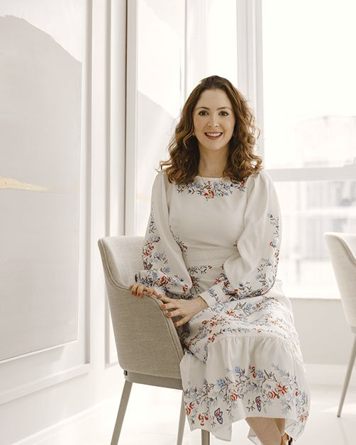
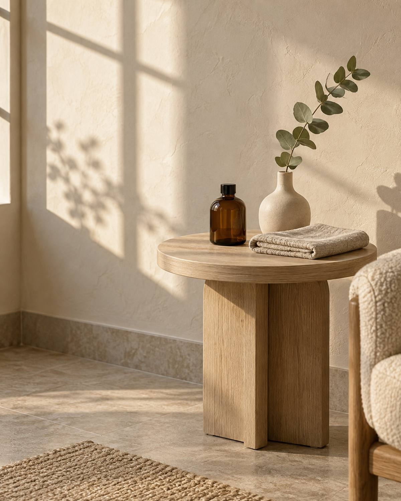
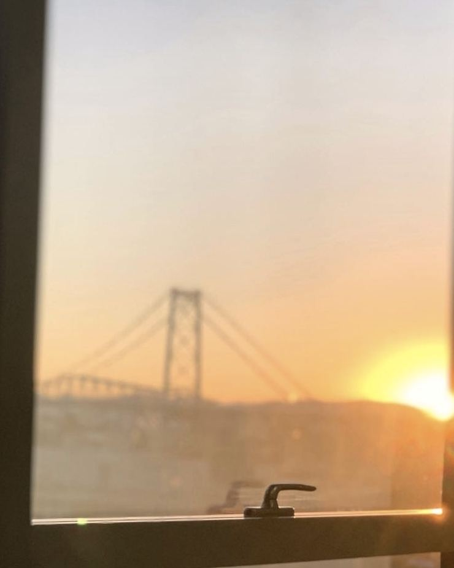

Florianópolis · Dermatologia
Dermatologia
clínica, estética
e cirúrgica.
- Dra. Ana Carolina Barcelos
- Médica dermatologista · CRM-SC 18874 · RQE 21196
- Centro de Florianópolis e teleconsulta
A dermatologista
Cuidar da pele
com tempo.

Pele muito clara, cabelo ruivo e muitas sardas. Foi tentando entender a minha própria pele, ainda na adolescência, que cheguei à dermatologia. Por alguns anos lutei contra a minha genética, até entender que a relação com a pele envolve genética, fatores externos e internos e, sobretudo, aceitação.
Hoje a dermatologia me encanta nos dois sentidos: do cuidado com lesões, como o câncer de pele, aos procedimentos estéticos. Na consulta, eu escuto o que te incomoda, examino a pele com calma e explico as opções com bom senso, dentro da realidade de cada pessoa.
Ana Carolina Folchini de Barcelos · Médica · CRM-SC 18874 · RQE 21196
- Conselho Regional de Medicina
- CRM-SC 18874
- Dermatologia
- RQE 21196
- Centro de Florianópolis
- Presencial e por vídeo
Tratamentos
O que eu avalio
e acompanho.
Dermatologia clínica, cirúrgica, estética e capilar. Tudo começa por uma consulta, presencial ou por vídeo.
-
Clínica
Manchas e melasma
Melasma, melanose solar e outras manchas: avaliação da causa e plano de cuidado no consultório e em casa.
Perguntar no WhatsApp -
Clínica
Acne, rosácea e dermatites
Acne, rosácea, dermatite atópica, de contato e seborreica, herpes e verrugas.
Perguntar no WhatsApp -
Clínica e cirúrgica
Pintas, sinais e câncer de pele
Avaliação de pintas e sinais, ceratoses, biópsia e tratamento do câncer de pele.
Perguntar no WhatsApp -
Cirúrgica
Pequenas cirurgias da pele
Retirada de lesões benignas e malignas e de cistos, correção de lóbulo de orelha e de cicatrizes.
Perguntar no WhatsApp -
Capilar
Cabelo e couro cabeludo
Queda de cabelo, calvície, alopecia areata e dermatite seborreica do couro cabeludo.
Perguntar no WhatsApp -
Estética
Estética da pele
Linhas de expressão, flacidez, cicatrizes de acne, olheiras e hidratação, com indicação feita na consulta.
Perguntar no WhatsApp
Como é o atendimento
Uma consulta
sem pressa.
A conversa vem primeiro: o que te incomoda, o que você deseja cuidar na pele, a sua rotina. Depois vêm o exame e as opções, explicadas uma a uma.
- I
Primeiro contato
Você chama no WhatsApp e escolhe entre a consulta no consultório do Centro ou a teleconsulta.
- II
Consulta
Histórico, exame da pele e tempo para todas as dúvidas.
- III
Plano de cuidado
O tratamento indicado, os procedimentos quando fizerem sentido e a rotina em casa.
- IV
Acompanhamento
Retornos para ver como a pele respondeu e ajustar o plano.
Cada pele tem uma história.
A consulta começa por ela.
Agendar
Presencial no Centro
ou por vídeo.
A teleconsulta é a consulta feita a distância: conversamos sobre o seu histórico, avalio a pele pela câmera e a receita sai com assinatura digital, sem precisar ir ao consultório buscar. Alguns exames e tratamentos precisam ser presenciais, e eu te digo quando for o caso.
- (48) 99188-3468
- Atendimento
- Presencial e por vídeo
- Consultório
- Sala 904, Torre 2 · Centro

Consultas com hora marcada
Chamar no WhatsAppDúvidas
Antes da
primeira consulta.
Como marco a consulta?
Pelo WhatsApp (48) 99188-3468. Na mensagem, conte se prefere a consulta no consultório do Centro ou a teleconsulta.
A teleconsulta substitui a consulta presencial?
Nem sempre. Ela atende bem muitas queixas, mas algumas análises da pele e alguns tratamentos precisam ser feitos no consultório.
Que queixas podem ser avaliadas por vídeo?
Por exemplo acne, alergias de pele, dermatite atópica, herpes-zóster, melasma, psoríase, rosácea, urticária, verrugas e vitiligo, entre outras.
Preciso ir ao consultório buscar a receita?
Não. Na teleconsulta, a prescrição é feita com assinatura digital.
A teleconsulta é segura?
Sim. Você é atendido de casa, e os dados seguem a Lei Geral de Proteção de Dados e as normas do Conselho Federal de Medicina.
Atende convênio?
O atendimento é particular. Se tiver dúvida, pergunte pelo WhatsApp.
O que levar na primeira consulta?
Se puder, a lista dos produtos que usa na pele e dos medicamentos em uso, e exames ou laudos anteriores ligados à queixa.
Visite o consultório
Um consultório
com vista para a ponte.
- Endereço
- Edifício Trompowsky Corporate
Av. Trompowsky, 291, Torre 2, sala 904
Centro, Florianópolis/SC
88015-300 - Horários
- Com hora marcada pelo WhatsApp
- (48) 99188-3468
